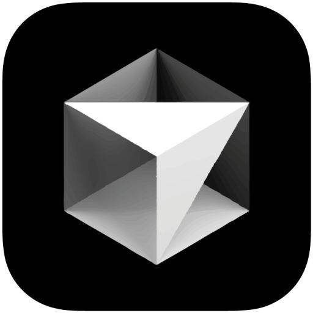
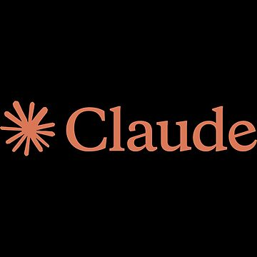
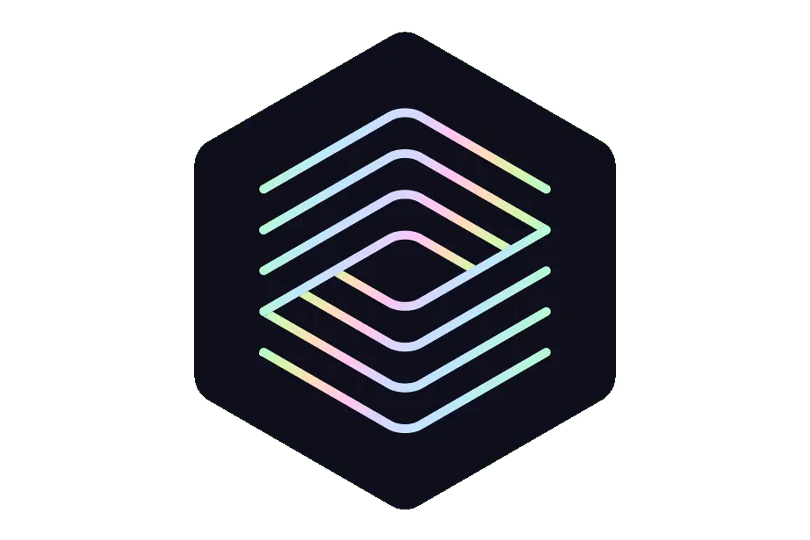

竞品对比：OMX vs Cursor/Claude Code



Cursor / Claude Code
类型：一体化 GUI 智能编辑器
采用黑盒交互模式，难以调度多模型协同，也无法自定义复杂的开发流水线，更适合单文件的辅助编码场景。
🎯 定位：个人级 AI 代码辅助工具

原生 Codex CLI
类型：底层代码生成引擎
仅提供基础的代码补全能力，无任务编排与多步协作能力，上下文窗口有限，仅能处理简短的代码生成需求。
🎯 定位：基础 AI 代码生成工具
Oh-My-Codex (OMX)
类型：智能编排与调度层
将各类 CLI 大模型封装为自主协作的多 Agent 团队，支持高度定制化的工作流配置与全流程自动化执行，打破工具间的孤岛效应。
🎯 定位：企业级 AI 软件工程协作平台，实现从代码生成到工程落地的全流程智能化升级。
核心洞察：OMX 并非要替代现有的 AI 编码工具，而是通过智能编排实现对它们的“驾驭”与整合。它打通了单一工具的能力边界，将分散的 AI 能力转化为协同工作的智能团队，为软件工程带来真正的自动化与智能化变革。